Convolution slides a small kernel across the image. At each output location, the local patch is multiplied elementwise by the flipped kernel and summed.
I implemented this in two ways: one version uses four explicit loops over image and kernel indices, and the other keeps only the outer two loops while NumPy handles the patch multiplication and reduction. In both cases, I use zero padding so the outpute stays the same size as the input. The box filter acts like local averaging, so it blurs the image, and at the same time the finite-difference filters respond to changes along x and y.
Code ideas - Four nested loops
def convolve_four_loops(image, kernel):
kernel = np.flip(kernel, axis=(0, 1))
pad_h = kernel.shape[0] // 2
pad_w = kernel.shape[1] // 2
padded_image = np.pad(image, ((pad_h, pad_h), (pad_w, pad_w)), mode="constant")
output = np.zeros_like(image, dtype=float)
for i in range(image.shape[0]):
for j in range(image.shape[1]):
for m in range(kernel.shape[0]):
for n in range(kernel.shape[1]):
output[i, j] += padded_image[i + m, j + n] * kernel[m, n]
return output
Code ideas - Two explicit loops
def convolve_two_loops(image, kernel):
kernel = np.flip(kernel, axis=(0, 1))
pad_h = kernel.shape[0] // 2
pad_w = kernel.shape[1] // 2
padded_image = np.pad(image, ((pad_h, pad_h), (pad_w, pad_w)), mode="constant")
output = np.zeros_like(image, dtype=float)
for i in range(image.shape[0]):
for j in range(image.shape[1]):
region = padded_image[i:i + kernel.shape[0], j:j + kernel.shape[1]]
output[i, j] = np.sum(region * kernel)
return output
Implementation
Runtime
Four nested loops
115.3169 s
Two nested loops
11.3973 s
scipy.signal.convolve2d
0.4912 s
The four-loop version is slow because almost all of the work happens in Python. The two-loop version is much faster because NumPy performs the patch-wise multiply-and-sum inside compiled code. SciPy is still far faster because it might already adapt some optimized convolution implementation from the library.
For the derivative display, I changed the visualization limits with the 99th percentile of the absolute derivative values while the actual derivative computation stayed the same. This aims for better visalization.
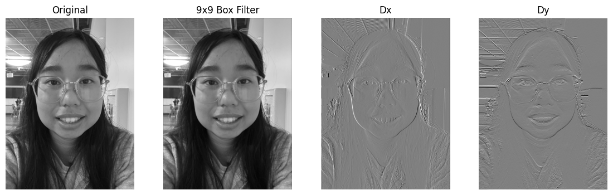
1.2 Finite Difference Operator
An image can be treated as an intensity function I(x, y). Edges appear where intensity changes quickly, so I estimate the partial derivatives with finite differences.
The horizontal derivative Ix = I * Dx responds strongly to vertical edges, while the vertical derivative Iy = I * Dy responds strongly to horizontal edges. I then combine them into the gradient magnitude |∇I| = sqrt(Ix2 + Iy2), which gives a single edge-strength score that does not depend on orientation.
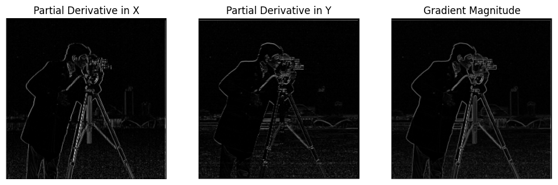
Based on the figuresm we might observe that the finite differences pick out the main edge structures in the cameraman image.
Dx highlights vertical boundaries, Dy highlights horizontal ones, and the gradient magnitude in this case combines both.
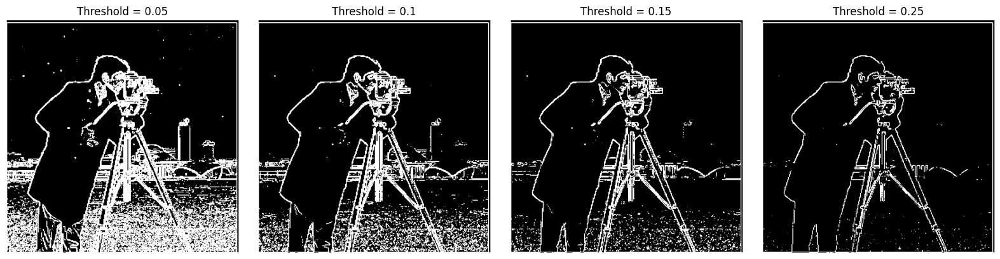
I tested thresholds 0.05, 0.10, 0.15, and 0.25. Some observations are that lower thresholds keep more weak edges but also more texture and noise, while higher thresholds suppress noise but remove some weaker real edges.
1.3 Derivative of Gaussian (DoG) Filter
A. Gaussian smoothing followed by derivative
Finite differences react not only to true edges but also to small high-frequency fluctuations. To reduce that effect, I first smooth the image with a 9x9 Gaussian kernel with sigma = 2, then take the same Dx and Dy derivatives. This gives cleaner responses because the blur removes a lot of the fine noise before differentiation.
In symbols, Iblur = I * G, then Ix = (I * G) * Dx and Iy = (I * G) * Dy, so the final magnitude is |∇Iblur| = sqrt(Ix2 + Iy2).
I also compared thresholds 0.05, 0.10, 0.15, and 0.20 on the smoothed gradient magnitude. The comparison is mainly about the tradeoff between keeping weak edges and suppressing residual noise; I did not choose a single final threshold in the notebook.
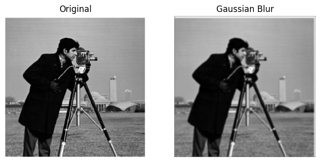
*The Gaussian blur removes small local fluctuations before any derivative is taken.
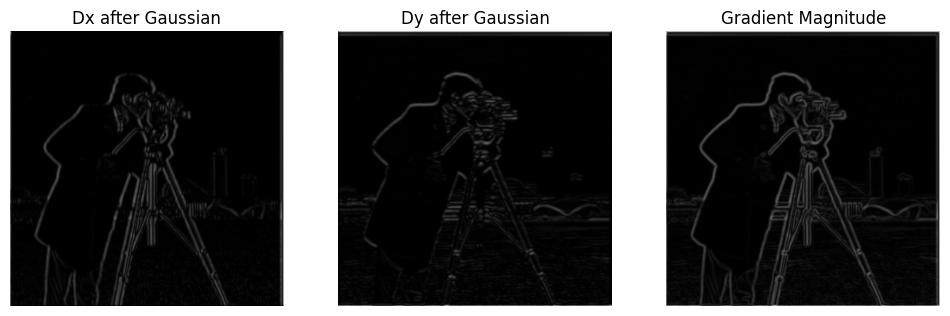
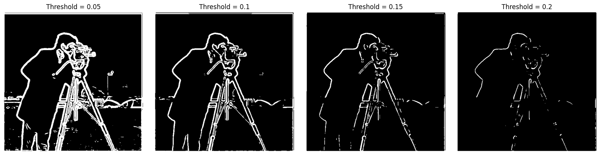
There is clear some tradeoff between keeping weak edges and suppressing residual noise.
B. Derivative of Gaussian filter
Here DoG means Derivative of Gaussian, not Difference of Gaussians. Because convolution is associative,
(I * G) * Dx = I * (G * Dx) and the same holds for Dy.
Based on the mathematical properties, in this chapter we will use the derivative-of-Gaussian filters first and apply them directly to the image instead of smoothing and differentiating in two separate steps.
The DoG X and DoG Y filters are the Gaussian-smoothed versions of the finite difference operators.
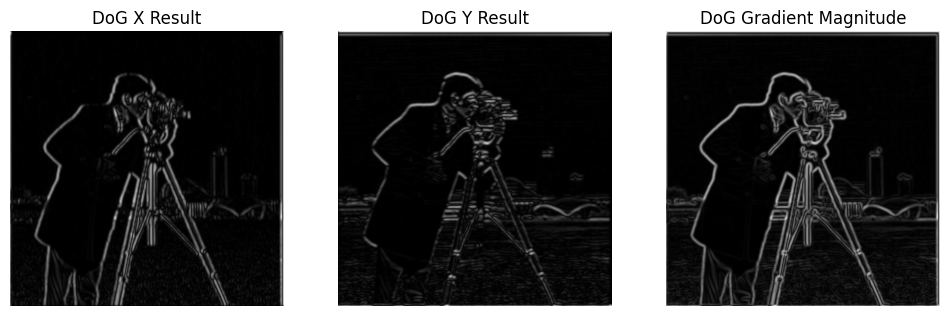
Applying the DoG filters directly to the image gives edge responses that are very close to the blur-then-derivative pipeline.
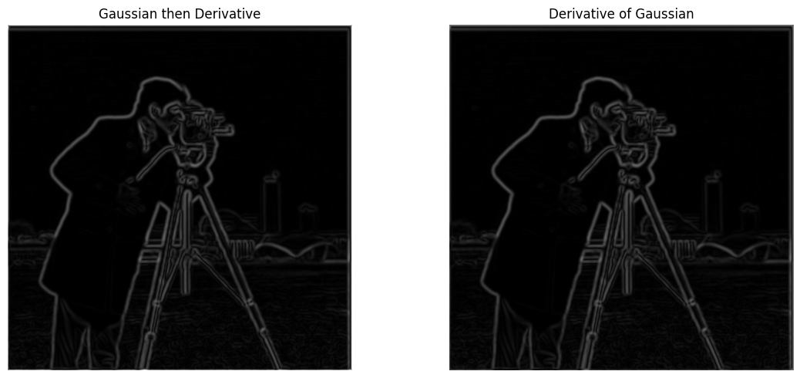
The two approaches produce very similar edge structures, as expected from convolution associativity.
Small differences near the borders can still appear because the sequential version applies padding and cropping at an intermediate stage.
Bells & Whistles: Gradient Orientation
Gradient magnitude tells me how strong an edge is, but not which direction it points. For orientation, I work with the gradient vector (gx, gy) and avoid built-in angle functions. The implementation uses the tangent half-angle identity, a Taylor-series approximation of arctangent, and quadrant correction from the signs of gx and gy. Zero-gradient pixels are assigned orientation 0 because they do not have a meaningful direction.
Taylor approximation
The goal was to compute the orientation without calling built-in angle functions.
Directly approximating arctan(gy / gx) is inconvenient because the ratio
can become very large when gx is close to zero.
I therefore use the tangent half-angle identity to map the problem to a bounded value,
then approximate arctangent with a Taylor series.
Finally, the signs of gx and gy are used to recover the correct quadrant.
def atan_taylor(x, n_terms=50):
result = np.zeros_like(x, dtype=float)
for n in range(n_terms):
result += ((-1) ** n) * x ** (2 * n + 1) / (2 * n + 1)
return result
For visualization, I map hue to orientation, saturation to 1, and value to gradient magnitude. The magnitude is scaled with the 99th percentile before clipping into [0, 1], so strong edges stay bright without a few extreme values dominating the display. The color wheel explains the angle-to-color mapping. One important geometric point is that gradient orientation is perpendicular to the visible edge; the gradient points toward the direction of fastest intensity increase.
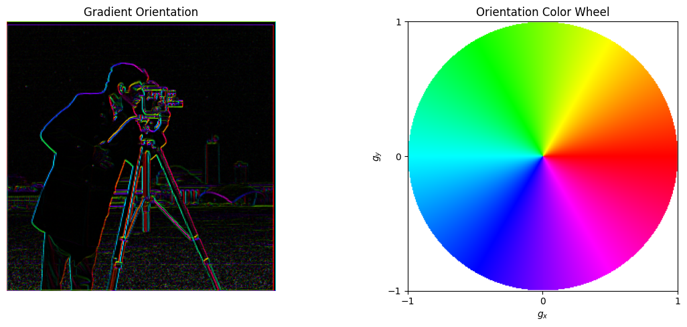
The orientation image uses cyclic color to encode direction, and the wheel shows how colors correspond to gradient directions.
Part 2: Fun with Frequencies
2.1 Image Sharpening
Unsharp masking is a technique that enhances the apparent sharpness of an image by amplifying high-frequency details. The method works as follows:
Ilow = G * I
Ihigh = I - Ilow
Isharp = I + alpha · Ihigh
A Gaussian blur (G) removes fine details, keeping only low-frequency structure. By subtracting the blurred version from the original, we isolate the high-frequency component. Adding a scaled multiple of these high frequencies back to the original image increases edge contrast and apparent sharpness. The parameter alpha controls the strength of this enhancement.
Taj Mahal Example
I applied unsharp masking to the Taj Mahal image with a 9x9 Gaussian kernel (σ = 2) and tested different alpha values (0.5, 1.0, 2.0). As alpha increases, the edge contrast becomes stronger, creating a crisper appearance. However, excessive sharpening can also amplify noise and create halos around edges, making the image look over-processed.
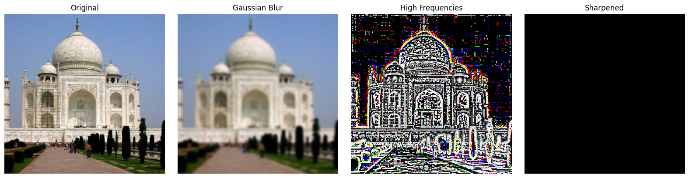
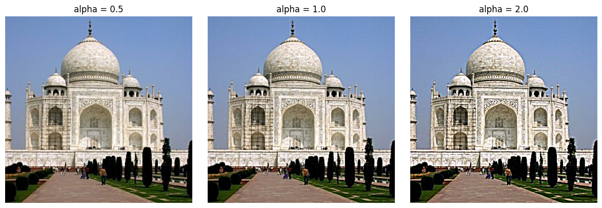
Effect of varying alpha in the unsharp mask.
Alpha = 0.5 produces subtle enhancement, alpha = 1.0 provides moderate sharpening, and alpha = 2.0 creates strong edge emphasis.
Higher alpha values might risk over-sharpening and introducing halos as we adapt higher and higher frequencies.
Blurry Image Sharpening
I also tested sharpening on the blurry cat image.
Unsharp masking can strengthen the remaining edges and increase local contrast, but it cannot recover detail that was already lost during the initial blur.
The cat's fur is not that clear and not fullly recoverable. The improvement is limited to enhancing edges that are still present, making the result appear slightly sharper without fundamentally restoring the original resolution.
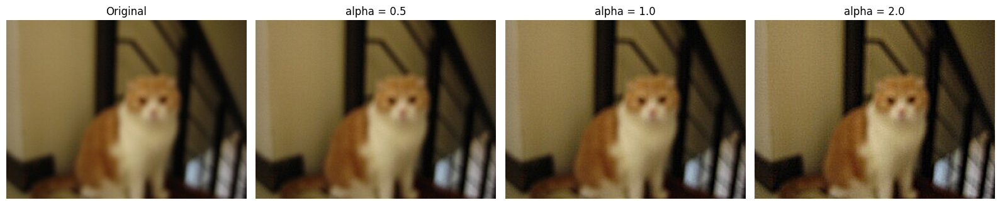
Sharpening the inherently blurry cat image at different alpha levels (0.5, 1.0, 2.0).
The enhancement makes edges slightly crisper, but cannot recover the original detail that was already lost.
Blur and Re-sharpen Experiment
Starting from the sharp lizard image,
First blurred it with the Gaussian filter, then attempted to re-sharpen the blurred version using unsharp masking with alpha = 2.0.
The re-sharpening increases local edge contrast, but cannot fully restore the high-frequency detail removed by the blur.
It attribures to the central idea that once information is lost through blur, sharpening can only enhance remaining features, not reconstruct what was removed.
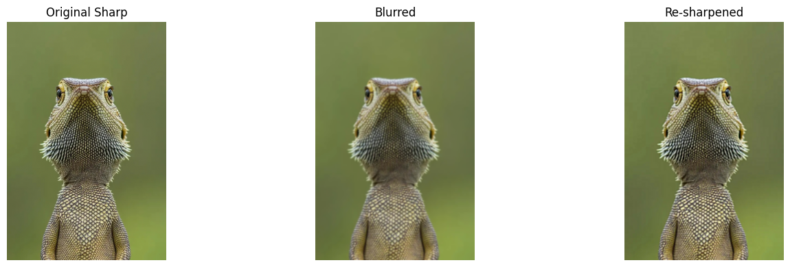
The Lizard scales are once very clear in the original image, but become less distinct after blurring and re-sharpening. The edges on the resharpens are more pronounced, but not that vivid compared to the original.
2.2 Hybrid Images
Derek + Nutmeg: The Classic Hybrid
The goal to this part is to create an image that appears different depending on the viewing distance.
First, the two images (human and cat) were aligned using corresponding facial landmarks which are their two eyes, to ensure proper perceptual grouping.
The alignment involved scaling and rotating in order to make key features matched spatially.
Aligned Images
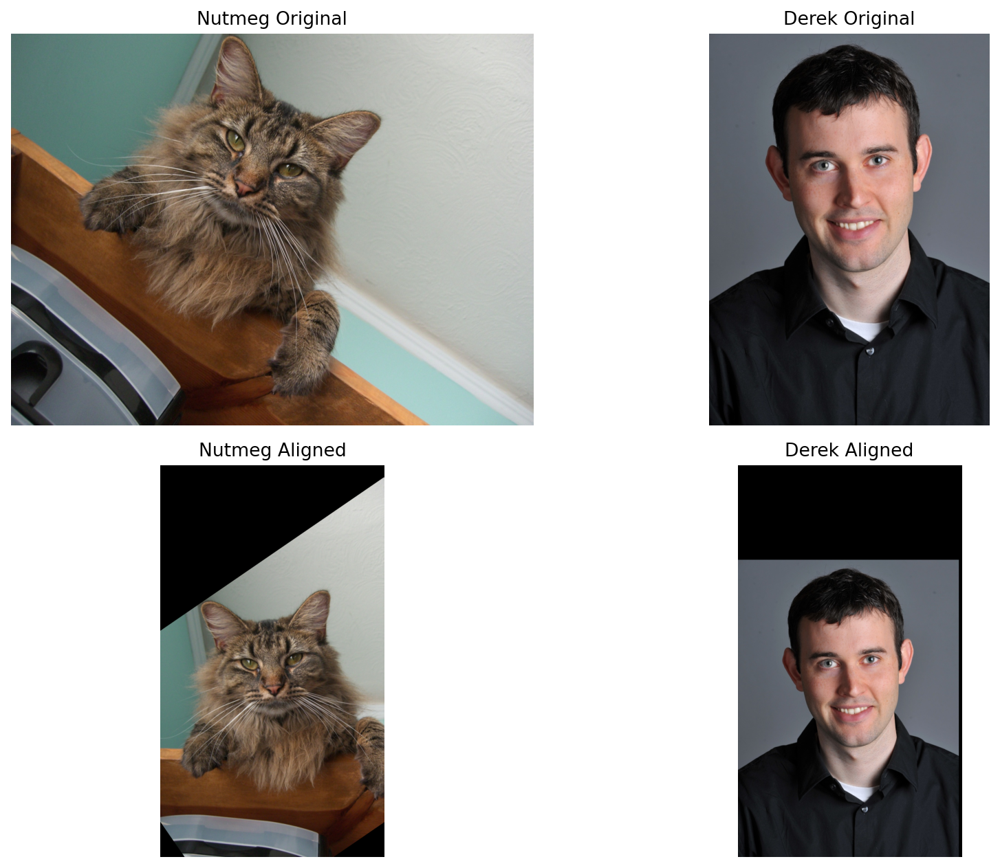
Frequency Components
After several rounds of my test, I chose the optimal parameters based on my visual assessment.
Nutmeg was filtered with a Gaussian (σ = 4) to extract high frequencies,
isolating fine details like fur texture and facial features. Derek was filtered with a Gaussian (σ = 12) to extract low frequencies, retaining the overall face structure and facial proportions.
The high-pass image was then added to the low-pass image to create the hybrid.
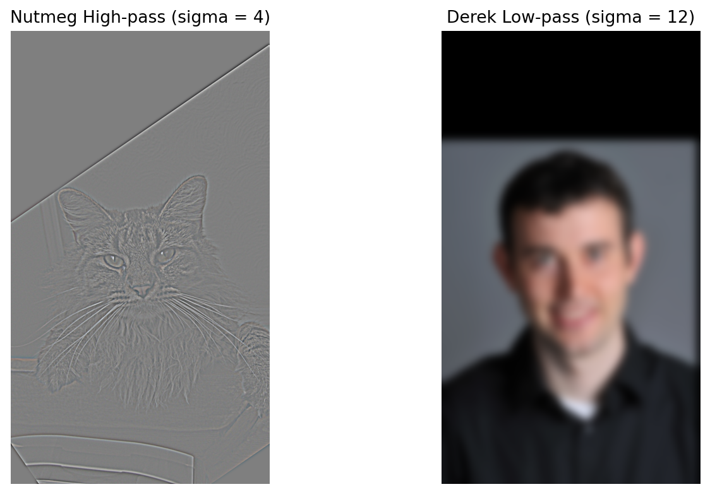
Nutmeg (high-pass, σ=4) provides fine edges and texture.
Derek (low-pass, σ=12) provides the coarse face structure.
Final Hybrid Image
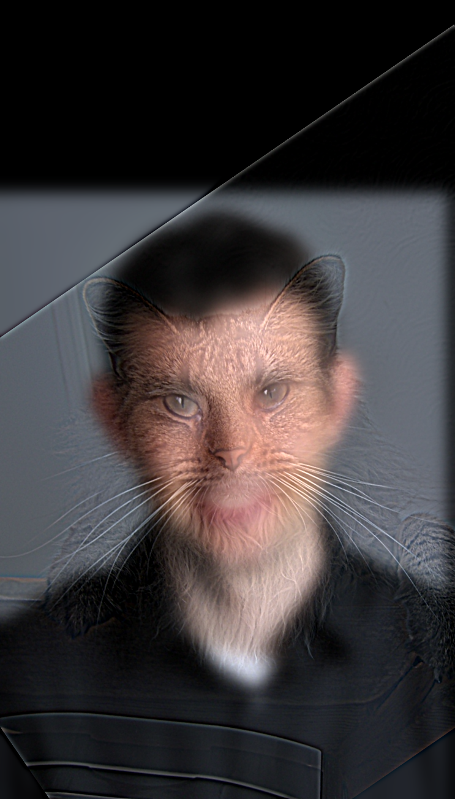
Viewed up close, Derek's face dominates; viewed from a distance, Nutmeg's face becomes visible, which is really interesting to observe.
Frequency Analysis
The Fourier transform helps show what frequencies are kept in each image. In the original images, the energy is spread across different frequencies. After high-pass filtering Nutmeg, most of the low-frequency information near the center is removed, while more high-frequency details remain. For Derek, the low-pass filter keeps most of the energy near the center, so the smoother facial structure is preserved. The final hybrid image contains both low- and high-frequency information,
which is why it looks different when viewed from different distances.
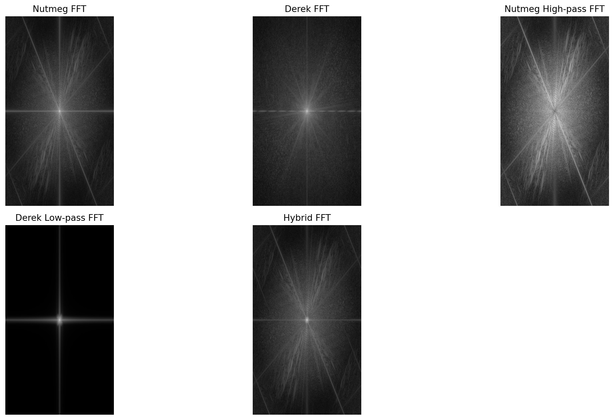
After fftshift, low spatial frequencies are near the center. The frequency spectra clearly show the low-pass and high-pass separation.
CS280A Bells & Whistles: Color Hybrid Images
I also tried keeping color in different parts of the hybrid image. I compared three cases: color only in the low-frequency image, color only in the high-frequency image, and color in both. From the results, keeping color in the low-frequency part gives the clearest overall color. When color is only kept in the high-frequency part, the image looks much more muted and almost grayscale. This makes sense because the high-frequency part mainly keeps edges and fine details, while most of the visible color comes from the low-frequency part.
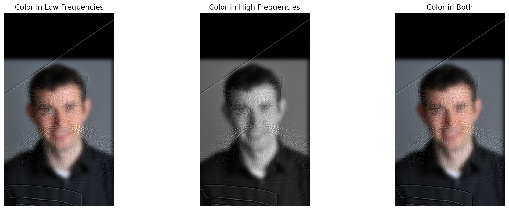
Three color strategies: color in low frequencies, color in high frequencies (appears more washed out), and color in both. Color is more perceptually impactful at low frequencies.
Custom Hybrid 1: Me and my boyfriend
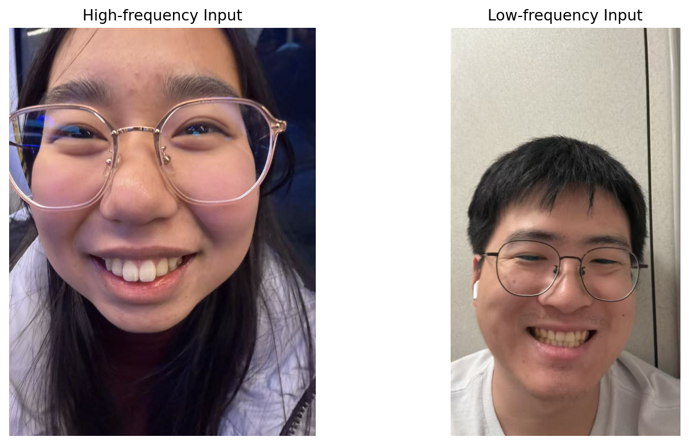
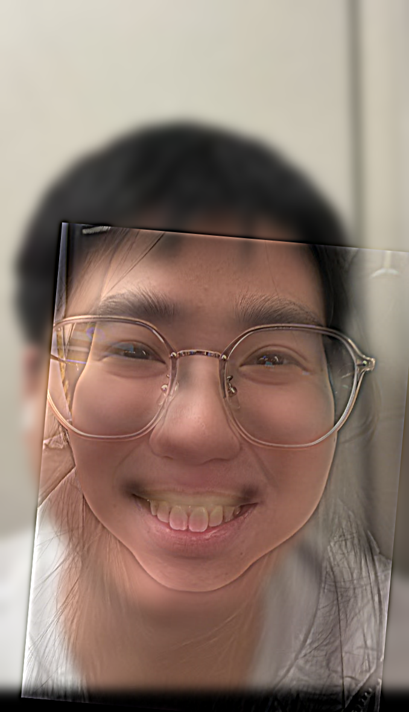
Viewed up close, my boyfriend's face dominates, while from a distance, my face becomes more visible.
There is some misalignment from the rotation, which creates slight edge noise, but the hybrid effect is still quite noticeable.
Custom Hybrid 2: Lizard and my nessie
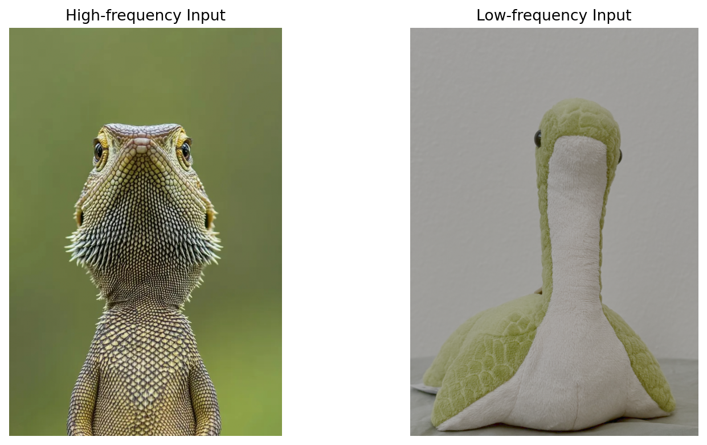
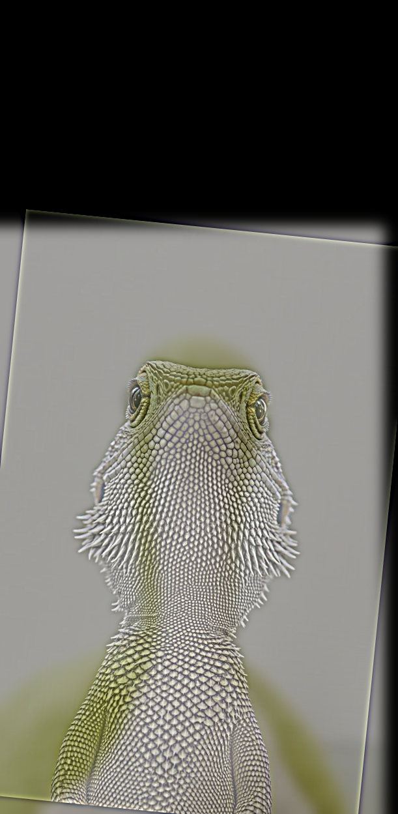
Somehow shows that nessie could be lizard...
2.3 Gaussian and Laplacian Stacks
Image stacks are similar to pyramids but without downsampling. Each level of the stack maintains the same image resolution, allowing direct frequency analysis and manipulation at each scale. The Gaussian stack progressively smooths the image, while the Laplacian stack isolates frequency bands.
Gaussian Stacks
The Gaussian stack is created by repeatedly applying Gaussian convolution with increasing sigma values. G0 is the original image, and each subsequent level Gi is more blurred than the previous.
Unlike pyramids, the spatial dimensions never change; only the frequency content changes.
For this project, I used 6 levels with base sigma = 2, where each level's sigma roughly doubles.
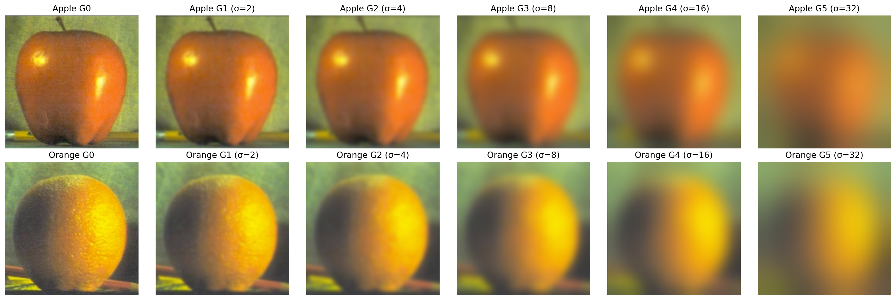
Gaussian stacks for both the apple (top) and orange (bottom) images, showing progressive smoothing without downsampling. The images remain full-resolution at each level.
Laplacian Stacks
Each Laplacian level Li isolates a specific frequency band by computing the difference between consecutive Gaussian levels: Li = Gi - Gi+1.
This separates the image into a set of bandpass filters, each capturing detail at a particular scale.
The final low-frequency residual (represented as the lowest-resolution Gaussian) captures the remaining coarse structure.
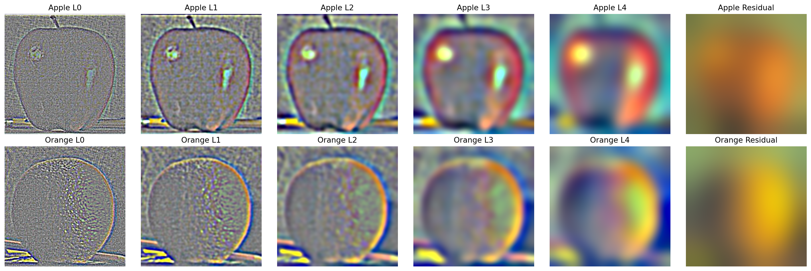
Laplacian frequency bands (L0 through L4) for both images, with the residual low-frequency component shown separately.
Each band captures detail at a different spatial frequency.
2.4 Multiresolution Blending
Multiresolution blending seamlessly combines two images by blending their Laplacian frequency bands independently. Each frequency band is blended according to a mask that is also decomposed into frequency bands. This allows different spatial frequencies to transition over different widths, creating smooth seams at all scales.
Lblendi = Mi · LAi + (1 - Mi) · LBi
where Mi is the Gaussian-blurred mask at level i. After blending all frequency bands and the residual, the result is reconstructed by summing all blended components.
Oraple (Apple + Orange)
The classic "oraple" combines an apple and an orange with a vertical seam in the middle. Using a hard vertical mask and blending independently at each Gaussian level, the mask becomes progressively smoother at coarser scales. This produces a much smoother visual transition than directly splicing the images with a hard edge.
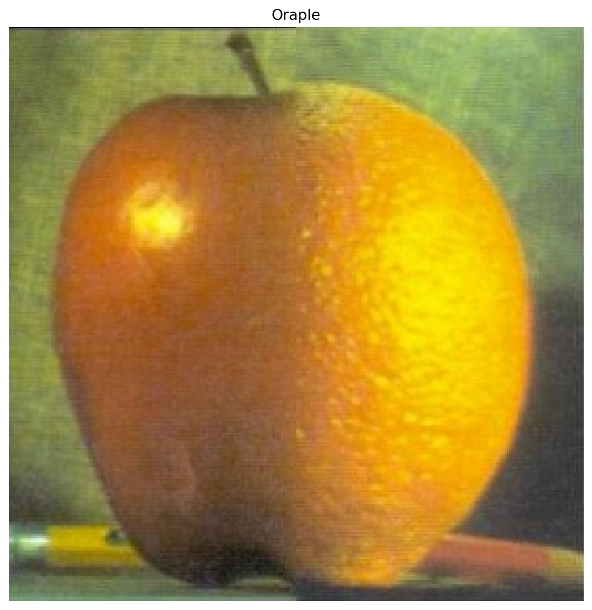
The blended result of apple (left) and orange (right) using multiresolution blending with a vertical mask. The seam is imperceptible because each frequency band transitions over an appropriate width.
Figure 3.42 Recreation
This visualization recreates Figure 3.42 from Szelski's textbook, showing the multiresolution blending process in detail. The figure displays the Laplacian bands and masks at multiple scales, allowing inspection of how each frequency component is blended and how the masks evolve across scales.
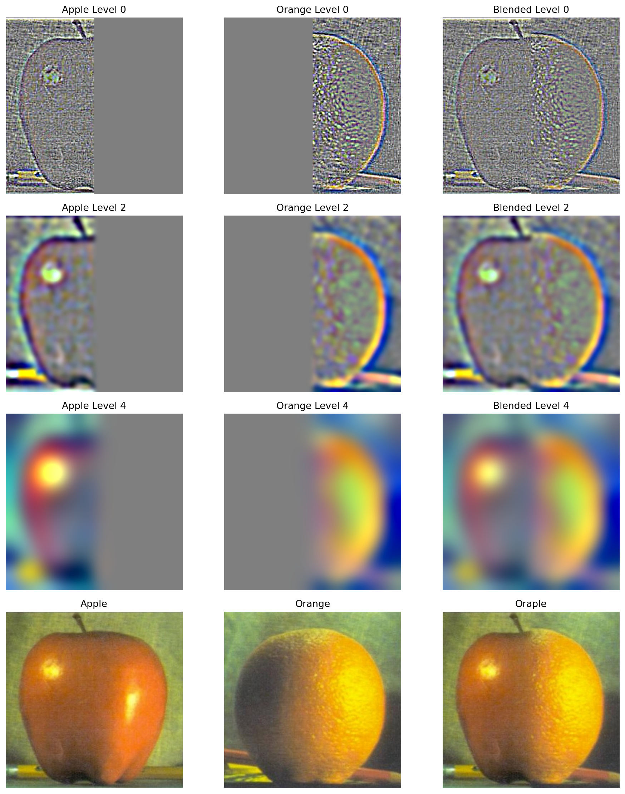
Detailed visualization of the blending process at multiple frequency levels. Top rows show apple and orange contributions, middle rows show the Gaussian mask stack, and bottom rows show the blended results at each scale.
Custom Blend 1: Horizontal Sea Blend
This is a custom multiresolution blend of two seascapes using a horizontal mask.
I took one photo in Hawaii and the other in California, so I thought it would be interesting to combine two different views of the Pacific Ocean.
The main goal was to create a smooth transition between the two scenes. I manually aligned the images so that the horizon lines were close to each other, then used a horizontal mask to blend the upper part of one image with the lower part of the other.
Even though due to the contrast color between the two images(blue and orange), the transition is smooth and natural-looking .
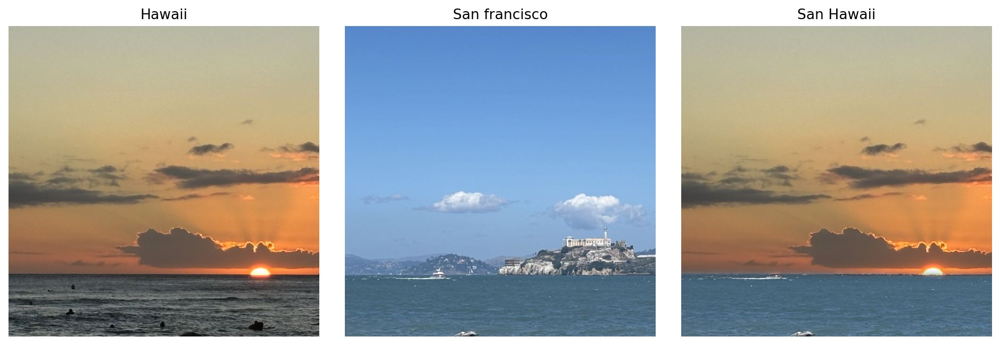
Two seascapes combined with a horizontal mask using multiresolution blending. The smooth transition across scales creates a natural-looking join.
Custom Blend 2: Irregular Seasonal Tree Road Blend
This example uses a custom triangular mask to blend two seasonal versions of the same tree-lined road, one in winter with snow and the other in summer with green trees.
Both photos are from my hometown, Nanjing, near the Sun Yat-sen Mausoleum area, which is especially beautiful in different seasons. I designed the triangular mask to roughly follow the shape of the road as it narrows toward the distance. This also shows that multiresolution blending can work with custom mask shapes instead of only simple straight boundaries. The triangle focuses the blend around the road and foreground, so the two seasonal scenes can transition more smoothly.
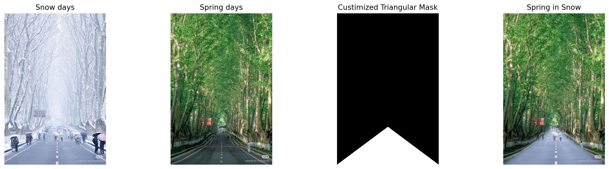
Winter and summer versions of a tree-lined landscape combined with an irregular triangular mask. The multiresolution approach creates smooth transitions even with complex mask shapes.
My Favorite: Laplacian Stack Breakdown
The seasonal tree blend is my favorite result because it beautifully demonstrates how multiresolution blending handles both fine and coarse features. At the finest scale, the triangular mask is sharp, creating a precise transition for high-frequency details like leaves and texture. As the scale becomes coarser, the Gaussian-blurred mask widens, allowing the lower-frequency components (overall color, lighting, and structure) to transition over a wider region. This results in a natural blend where fine details transition over a narrow seam while overall appearance transitions smoothly across a wider area.
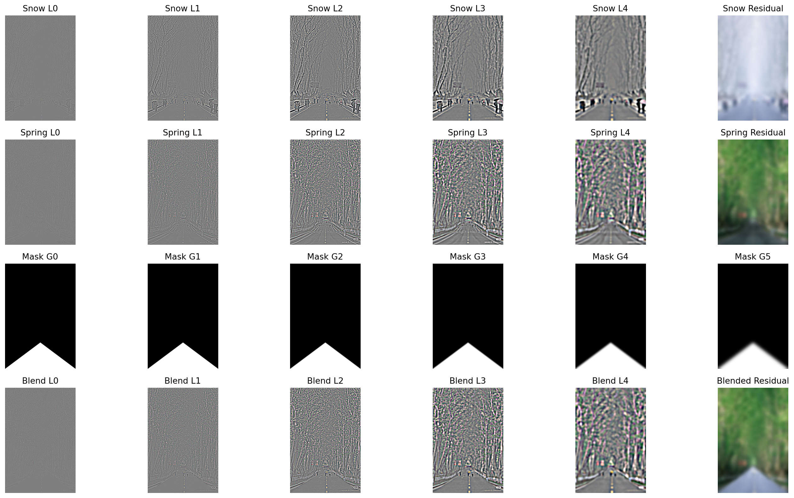
Detailed breakdown of the seasonal tree blend process. Rows show: source image Laplacian bands, mask Gaussian stack evolution, and the blended components at each frequency. The mask transitions from sharp at fine scales to smooth at coarse scales.
CS280A Bells & Whistles: Color Multiresolution Blending
The multiresolution blending algorithm naturally handles color images by applying the same frequency decomposition and mask-based blending to all three RGB channels independently. The same Gaussian mask is applied spatially across all channels, so color information is preserved throughout the decomposition and reconstruction process. This is especially effective for the apple/orange and seasonal tree blends, where color differences (red vs. orange, snow vs. green foliage) are an essential part of the visual impact. The frequency-based approach ensures that color transitions smoothly at all spatial scales, contributing to the natural appearance of the blend.
Most Important Thing I Learned
The most important thing I learned is how strongly spatial frequency affects image perception. Fine edges and textures are represented by high frequencies, while broader shapes and overall appearance are represented by low frequencies. Hybrid images exploit this difference directly, so the same static image appears completely different depending on viewing distance. Multiresolution blending extends this insight by allowing different frequency bands to transition over different spatial widths, enabling smooth seams that would be impossible with a single-scale approach. This frequency-based thinking is fundamental to image processing and explains why common techniques like blurring, sharpening, and seam removal are more sophisticated than they initially appear.